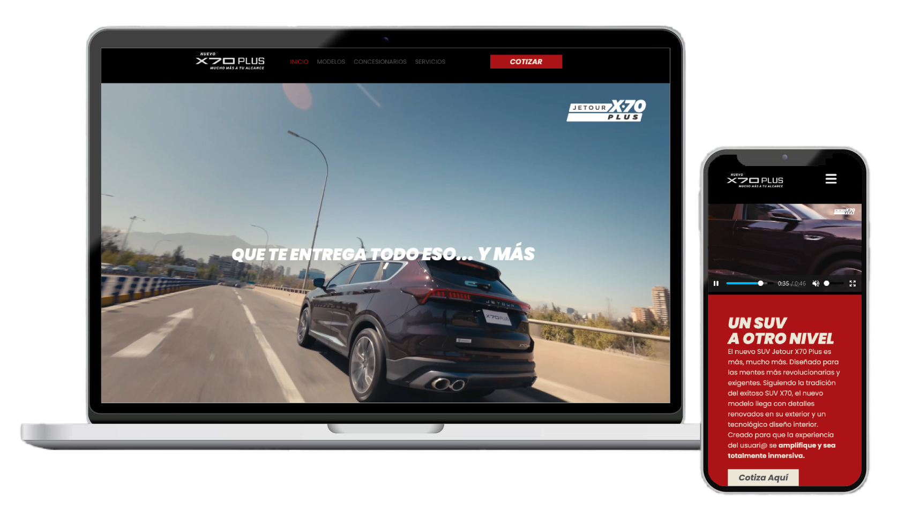
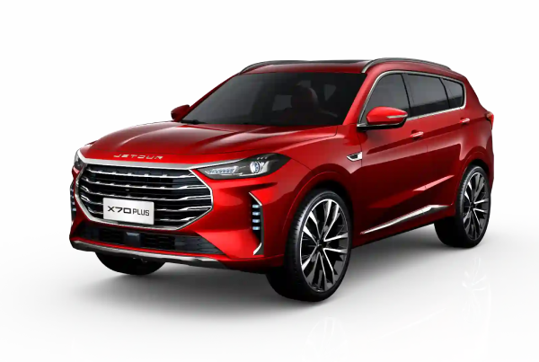
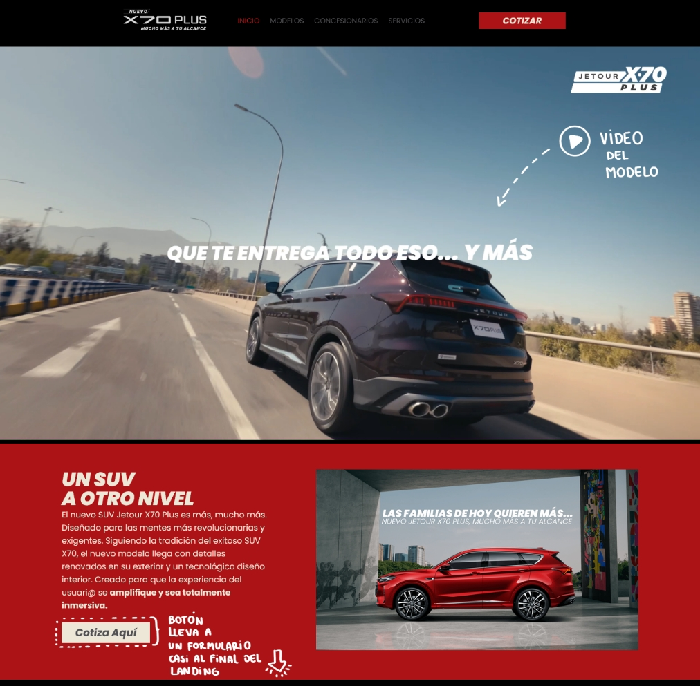
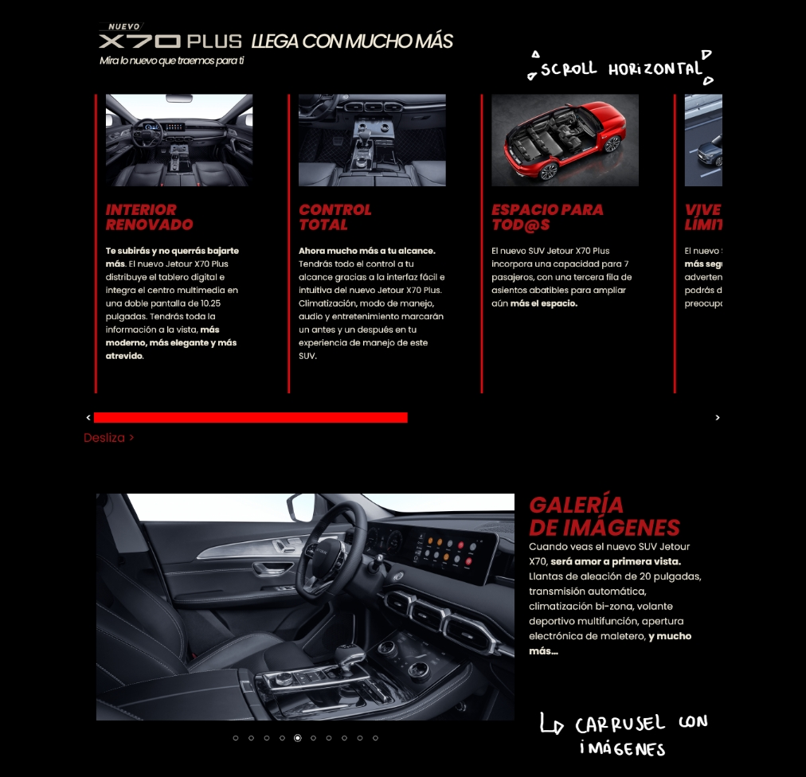
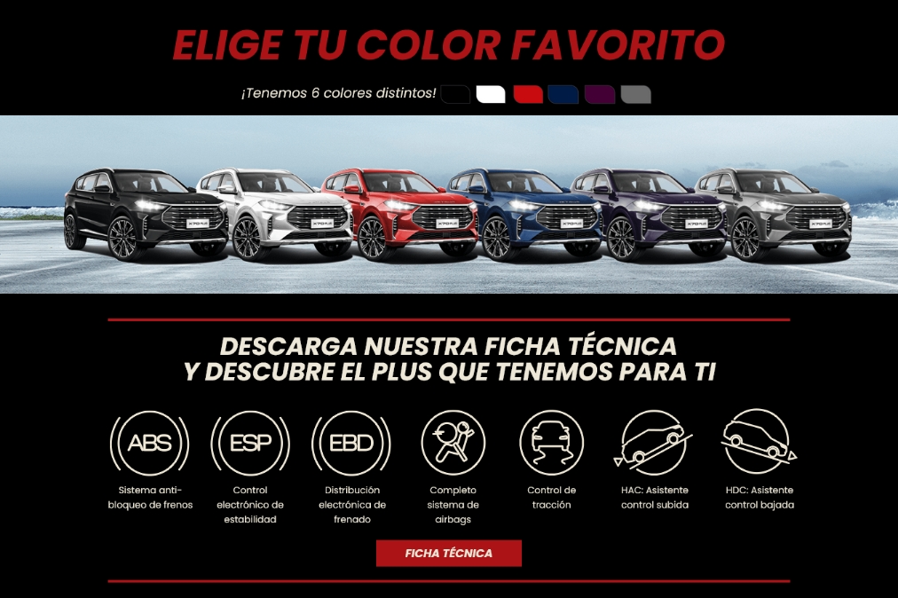
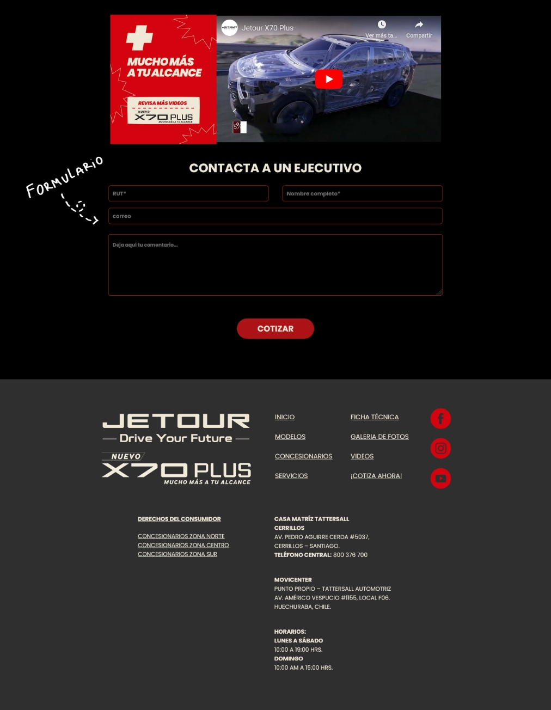
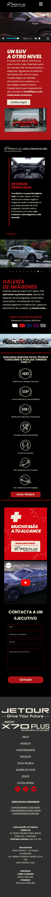

Jetour
Landing page promocional — Frontend Development

Acerca del proyecto
Desarrollo frontend de landing page promocional para el lanzamiento de un nuevo modelo de camioneta Jetour. El proyecto fue desarrollado en colaboración con el equipo de diseño, encargándome de implementar la interfaz y estructura de la página.

Contexto
La landing page fue desarrollada para apoyar el lanzamiento de un nuevo modelo de camioneta Jetour. El objetivo del sitio era presentar el vehículo, destacar sus principales características y dirigir a los usuarios hacia más información del producto.
Mi Rol
En este proyecto estuve a cargo del desarrollo frontend de la landing page.
Responsabilidades principales:
- Maquetación completa de la landing page
- Implementación responsive para distintos dispositivos
- Integración de diseño entregado por el equipo creativo
- Ajustes visuales para mantener consistencia entre secciones
Desarrollo Frontend
La landing fue construida utilizando HTML, CSS y JavaScript, enfocándose en una estructura clara y una experiencia visual consistente con el diseño original.
Se trabajó en:
- Layout responsive
- Organización de secciones promocionales
- Optimización visual para distintos tamaños de pantalla
Resultado
La landing page presenta el nuevo modelo de Jetour a través de una estructura clara, destacando visualmente las características del vehículo y ofreciendo una experiencia de navegación simple para los usuarios.
Landing con contador, realizado con HTML-CSS-Javascript




Y su versión mobile

Impacto del proyecto
La landing page permitió presentar el nuevo modelo de Jetour de forma clara y visualmente atractiva, destacando sus principales características y facilitando el acceso a información del vehículo desde distintos dispositivos.
El desarrollo frontend aseguró que la propuesta visual del equipo creativo se implementara de manera consistente, manteniendo una experiencia fluida tanto en desktop como en mobile.